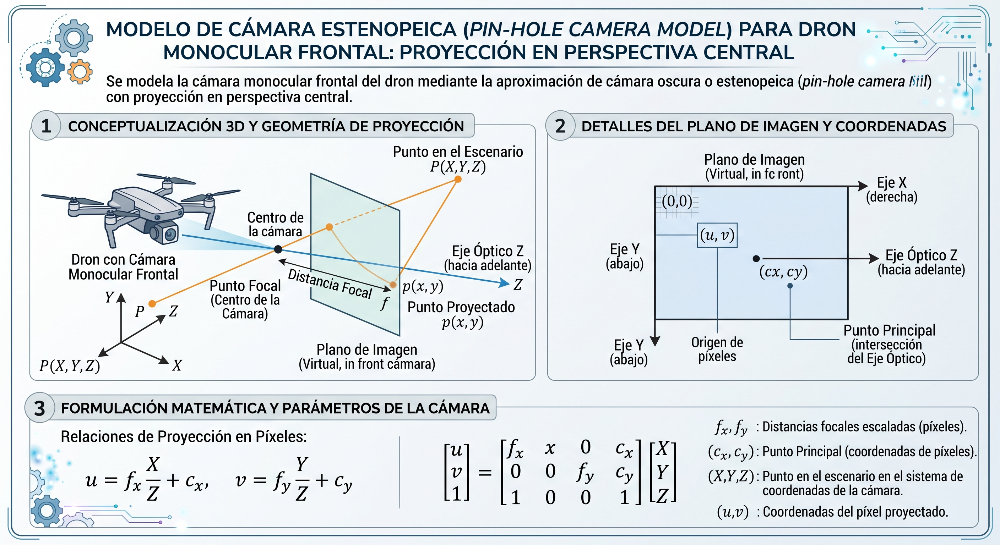
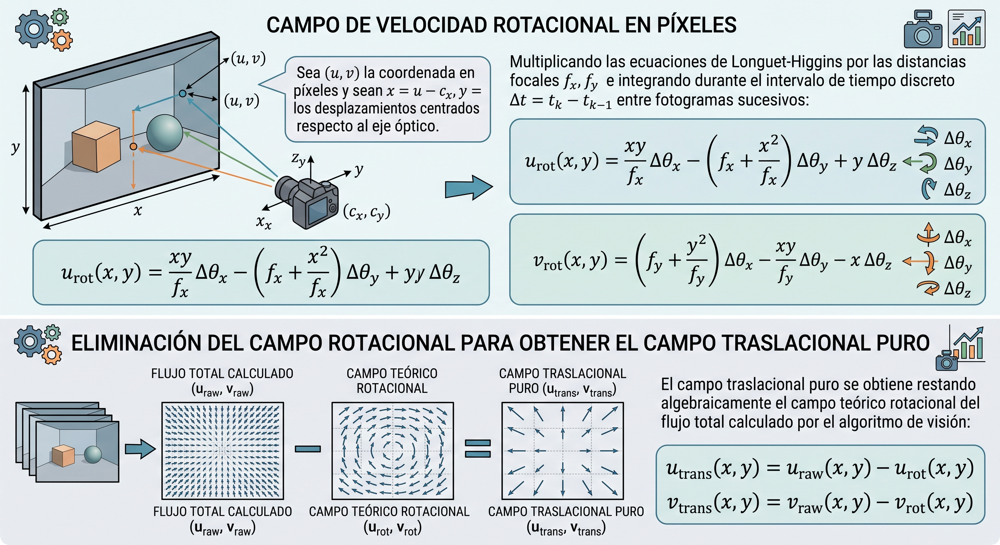
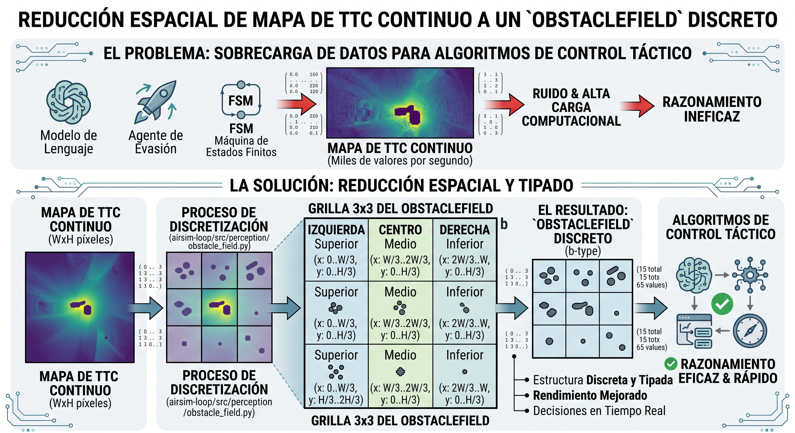

Anexo 5: Fundamentos matemáticos de percepción monocular, flujo óptico y estimación de tiempo hasta la colisión (TTC)¶
La premisa sensorial sobre la que se fundamenta DroneLM es la autosuficiencia perceptiva bajo restricciones severas de costo y carga útil (§1.2): gobernar un vehículo aéreo no tripulado (UAV) en entornos urbanos y suburbanos tridimensionales utilizando exclusivamente una cámara monocular RGB convencional y la telemetría de actitud angular provista por una unidad de medición inercial (IMU) estándar, prescindiendo por diseño de sensores activos pesados o costosos (LiDAR, radar, sonar) y de cámaras estereoscópicas calibradas.
El desafío físico de este enfoque radica en la ambigüedad proyectiva: una cámara proyecta el mundo tridimensional \(\mathbb{R}^3\) sobre un plano bidimensional \(\mathbb{R}^2\), perdiendo la escala métrica absoluta de distancia (\(Z\)). Para recuperar la información de proximidad de manera pasiva y reactiva, el sistema explota el flujo óptico, es decir, el patrón aparente de movimiento de las intensidades lumínicas en el plano de la imagen inducido por el movimiento relativo entre la cámara y la escena.
Este anexo formaliza la matemática subyacente al pipeline de percepción implementado en airsim-loop/src/perception/flow_ttc.py y obstacle_field.py, deduciendo paso a paso las ecuaciones de derotación analítica, la estimación robusta del Foco de Expansión por mínimos cuadrados ponderados con recorte de valores atípicos (RANSAC-lite), y la teoría óptica del tiempo hasta la colisión (\(\tau\)).
A5.1 Modelo geométrico de cámara pin-hole y calibración en AirSim¶
Se modela la cámara monocular frontal del dron mediante la aproximación de cámara oscura o estenopeica (pin-hole camera model) con proyección en perspectiva central.

A5.1.1 Sistemas de coordenadas y matriz intrínseca¶
Sea \(P_c = (X_c, Y_c, Z_c)^T \in \mathbb{R}^3\) la posición de un punto del entorno físico en el sistema de coordenadas de la cámara, donde el eje \(Z_c\) coincide con el eje óptico apuntando hacia adelante, \(X_c\) apunta hacia la derecha del dron e \(Y_c\) apunta hacia abajo (convención visual estándar).
La proyección en perspectiva de \(P_c\) sobre el plano de imagen produce coordenadas métricas normalizadas \((x, y)\):
La transformación de coordenadas continuas normalizadas a coordenadas discretas en píxeles \((u, v)\) en la grilla del sensor viene dada por:
donde: * \(f_x, f_y\) son las distancias focales expresadas en unidades de píxeles en las direcciones horizontal y vertical. * \(c_x, c_y\) son las coordenadas del centro óptico o punto principal en píxeles, nominalmente situadas en el centro geométrico del fotograma: \(c_x = \frac{W}{2}, c_y = \frac{H}{2}\).
En forma matricial homogénea, la proyección se expresa mediante la matriz de parámetros intrínsecos \(K \in \mathbb{R}^{3 \times 3}\):
A5.1.2 Parámetros intrínsecos en Cosys-AirSim y escalado dinámico¶
En la configuración nominal de vuelo de DroneLM, la cámara frontal captura a resolución completa de \(1080 \times 720\) píxeles con un campo de visión horizontal (\(\text{FOV}_h\)) de \(90^\circ\). A partir de la relación trigonométrica:
Para \(W = 1080\text{ px}\) y \(\text{FOV}_h = 90^\circ\) (\(\tan(45^\circ) = 1\)), se obtiene \(f_x = \frac{1080}{2} = 540\text{ px}\). El estimador de flujo utiliza el valor calibrado \(f_x = f_y = 554.0\text{ px}\) (CAMERA_FX, CAMERA_FY), absorbiendo la leve distorsión radial modelada por el plugin.
Para reducir la latencia de cómputo en CPU/GPU sin alterar la geometría visual, los fotogramas se reescalan a un ancho de procesamiento \(W' = 320\text{ px}\) (FLOW_DOWNSCALE_WIDTH) con un factor de escala \(s = \frac{W'}{W} = \frac{320}{1080} \approx 0.2963\). Las distancias focales y el centro óptico se escalan homólogamente:
A5.2 Ecuaciones del flujo óptico continuo: descomposición traslacional y rotacional¶
Cuando el dron se desplaza por el espacio tridimensional con velocidad lineal instantánea \(V = (V_x, V_y, V_z)^T\) y velocidad angular \(\Omega = (\Omega_x, \Omega_y, \Omega_z)^T\) expresadas en el sistema de la cámara, la velocidad relativa de un punto estático del entorno respecto al sensor es:
Desarrollando el producto vectorial componente a componente:
Diferenciando las coordenadas proyectivas normalizadas \(x = \frac{X_c}{Z_c}\) e \(y = \frac{Y_c}{Z_c}\) con respecto al tiempo:
Sustituyendo las componentes de \(\dot{P}_c\), se obtienen las ecuaciones fundamentales del flujo óptico continuo (Longuet-Higgins & Prazdny, 1980):
A5.2.1 El dilema de la contaminación rotacional¶
El análisis de estas ecuaciones revela una asimetría física crucial para la robótica aérea: 1. Componente traslacional \((\dot{x}_{\text{trans}}, \dot{y}_{\text{trans}})\): es inversamente proporcional a la distancia \(Z_c\). Contiene toda la información tridimensional sobre la proximidad de los obstáculos. Si \(Z_c \to \infty\) (puntos en el horizonte o cielo), el flujo traslacional tiende a cero. 2. Componente rotacional \((\dot{x}_{\text{rot}}, \dot{y}_{\text{rot}})\): es totalmente independiente de la distancia \(Z_c\). Depende únicamente de las velocidades angulares del vehículo y de la posición del píxel en la imagen. Un giro sobre el eje de guiñada (yaw) o cabeceo (pitch) genera un desplazamiento visual uniforme tanto en un árbol a 2 metros como en una nube a 5 kilómetros.
[!WARNING] Si no se compensa activamente el flujo rotacional, cualquier maniobra de orientación angular contamina el campo visual, provocando que regiones lejanas sin riesgo (como el cielo o edificios distantes) presenten grandes magnitudes de flujo óptico, induciendo falsos positivos masivos de proximidad y colapsando el sistema de evasión.
A5.3 Derotación analítica basada en telemetría inercial (IMU)¶
Para aislar el componente traslacional puro, DroneLM implementa una etapa de derotación analítica en bucle cerrado (FlowTTCEstimator._derotate).
A5.3.1 Mapeo cinemático entre marco cuerpo y marco de cámara¶
El autopiloto del UAV reporta su orientación mediante ángulos de Euler en convención aeroespacial NED (North-East-Down): cabeceo (pitch, \(\theta\)), guiñada (yaw, \(\psi\)) y alabeo (roll, \(\phi\)).
Dado que la cámara monocular está rígidamente montada apuntando hacia el eje longitudinal del fuselaje (\(X_{\text{cuerpo}}\) adelante, \(Y_{\text{cuerpo}}\) derecha, \(Z_{\text{cuerpo}}\) abajo), la correspondencia entre los ejes angulares del dron y los ejes de giro ópticos de la cámara es: * Giro en cabeceo (\(\Delta \text{pitch}\)): rota las filas verticales de la imagen \(\implies \theta_x \sim \Delta \text{pitch}\). * Giro en guiñada (\(\Delta \text{yaw}\)): desplaza las columnas horizontales de la imagen \(\implies \theta_y \sim \Delta \text{yaw}\). * Giro en alabeo (\(\Delta \text{roll}\)): induce rotación pura en torno al eje óptico \(\implies \theta_z \sim \Delta \text{roll}\).
A5.3.2 Campo de velocidad rotacional en píxeles¶
Sea \((u, v)\) la coordenada en píxeles y sean \(x = u - c_x\), \(y = v - c_y\) los desplazamientos centrados respecto al eje óptico. Multiplicando las ecuaciones de Longuet-Higgins por las distancias focales \(f_x, f_y\) e integrando durante el intervalo de tiempo discreto \(\Delta t = t_k - t_{k-1}\) entre fotogramas sucesivos:
El campo traslacional puro se obtiene restando algebraicamente el campo teórico rotacional del flujo total calculado por el algoritmo de visión:

A5.3.3 Tratamiento de discontinuidades y límite de linealización¶
Durante giros bruscos, se presentan dos restricciones de ingeniería:
1. Normalización de ángulo de guiñada: ante cruces del límite \(\pm 180^\circ\) (\(\pm \pi\)), el incremento se desenvuelve modularmente:
$\(\Delta \psi_{\text{norm}} = (\Delta \psi + \pi) \pmod{2\pi} - \pi\)$
2. Límite de linealización (FLOW_MAX_ROTATION_DEG = 2.0°): la derotación analítica asume ángulos pequeños (\(\sin \Delta\theta \approx \Delta\theta\), \(\cos \Delta\theta \approx 1\)). Durante giros de evasión activos a alta velocidad angular (e.g., \(45^\circ/\text{s}\) a 5 Hz produce \(\Delta\theta \approx 9^\circ\)), el error de linealización y el desenfoque en zonas de baja textura (cielo) generan artefactos espurios. Si \(\max(|\Delta\theta_x|, |\Delta\theta_y|, |\Delta\theta_z|) > 2.0^\circ\), el estimador descarta la señal y emite un estado degradado seguro en lugar de admitir datos contaminados.
A5.4 Foco de Expansión (FOE): estimación por Mínimos Cuadrados Ponderados y RANSAC-lite¶
En vuelo traslacional hacia adelante (\(V_z > 0\)), las líneas de flujo óptico derotado divergen radialmente desde un punto singular en el plano de la imagen denominado Foco de Expansión (Focus of Expansion, FOE).
A5.4.1 Definición geométrica del FOE¶
Haciendo \(u_{\text{trans}} = 0\) y \(v_{\text{trans}} = 0\) en las ecuaciones traslacionales:
El FOE representa la intersección del vector de velocidad tridimensional instantánea del UAV con el plano del sensor. Si el dron avanza estrictamente recto en el eje de la cámara, el FOE se sitúa en el centro óptico \((c_x, c_y)\). Si el dron tiene deriva lateral o vertical (viento, balanceo), el FOE se desplaza.
Reescribiendo el flujo traslacional en función de la posición del FOE:
Esto demuestra que todo vector de flujo traslacional es colineal con el segmento de recta que conecta el píxel \((x, y)\) con el FOE.
A5.4.2 Sistema normal por mínimos cuadrados ponderados¶
Para cada píxel \(p_i = (x_i, y_i)^T\) donde el vector de flujo derotado \(v_i = (u_i, v_i)^T\) supera el umbral de ruido físico (FLOW_NOISE_FLOOR_PX = 0.35 px), definimos el vector unitario normal a la dirección del flujo:
Dado que el vector \(v_i\) apunta hacia/desde el FOE, la distancia ortogonal desde el FOE a la recta directriz debe ser nula:
Para mitigar la influencia del ruido en vectores pequeños, se asigna un peso proporcional a la magnitud del flujo: \(w_i = \|v_i\|\). Planteando el sistema sobredeterminado ponderado sobre el conjunto de \(N\) píxeles válidos:
Esto conduce a un sistema lineal simétrico \(2 \times 2\):
con:
Si el determinante \(\det(A) = A_{11} A_{22} - A_{12}^2 > 10^{-6}\), el sistema tiene solución única:
A5.4.3 Recorte de valores atípicos (RANSAC-lite) y plausibilidad física¶
Debido a reflejos, texturas repetitivas o imprecisiones locales, una fracción de los vectores no converge al FOE. Se aplica un filtro geométrico de consistencia angular: 1. Para cada vector \(v_i\), se calcula el ángulo \(\theta_i\) entre la dirección del flujo y el vector radial \((p_i - \text{FOE})\): $\(\cos \theta_i = \frac{(p_i - \text{FOE}) \cdot v_i}{\|p_i - \text{FOE}\| \cdot \|v_i\|}\)$ 2. Un vector se clasifica como inlier si \(\theta_i < \theta_{\text{outlier}} = 0.35\text{ rad}\) (\(\approx 20^\circ\)). 3. Si la cantidad de inliers supera 30, el sistema normal \(A \cdot \text{FOE} = b\) se re-resuelve exclusivamente sobre el subconjunto de inliers, refinando las coordenadas. 4. Verificación de plausibilidad física: Si el FOE resultante queda fuera del encuadre visual (\(x_{\text{FOE}} < 0\), \(x_{\text{FOE}} > W'\), \(y_{\text{FOE}} < 0\) o \(y_{\text{FOE}} > H'\)), el estimado se descarta categóricamente (\(\text{confidence} = 0\)), pues un punto de fuga fuera del sensor indica ausencia de avance frontal o dominancia de ruido cinemático.
A5.5 Teoría del \(\tau\) de Lee (1976) y deducción del TTC como observable óptico directo¶
La gran potencia teórica de la percepción monocular radica en que no es necesario conocer la distancia métrica \(Z_c\) ni la velocidad absoluta \(V_z\) para calcular el tiempo hasta el impacto.
A5.5.1 Deducción matemática¶
Tomando la magnitud del vector de flujo traslacional derotado para un píxel \(p = (x, y)\):
Reorganizando los términos:
Por definición física, si el vehículo continúa su aproximación hacia una superficie plana ortogonal con velocidad constante \(V_z\), el Tiempo hasta la Colisión (Time-to-Collision, TTC), formalizado originalmente como la variable biológica \(\tau\) por Lee (1976), es:
Dado que el flujo medido en píxeles representa la tasa discreta por fotograma \(\|v_{\text{trans}}\| = \frac{\Delta s}{\Delta t}\), se tiene:
donde: * \(\|p - \text{FOE}\|\) es la distancia euclidiana en píxeles desde el píxel evaluado hasta el Foco de Expansión. * \(\|v_{\text{trans}}(x, y)\|\) es la magnitud del flujo traslacional en píxeles. * \(\Delta t\) es el intervalo temporal medido entre fotogramas sucesivos a partir de la telemetría real.
[!IMPORTANTE] La variable métrica desconocida de escala (\(Z_c\)) se cancela formalmente en el cociente. El TTC resultante se expresa estrictamente en segundos, constituyendo un observable cinemático directo, invariante y absoluto.
A5.5.2 Verificación complementaria por divergencia del flujo¶
El operador divergencia aplicado sobre el campo de velocidades traslacionales bidimensional proporciona una vía de validación alternativa e independiente del FOE:
Diferenciando las expresiones de \(u_{\text{trans}}\) y \(v_{\text{trans}}\) con respecto a \(x\) e \(y\) (asumiendo superficie frontal aproximadamente plana en el plano transversal):
En flow_ttc.py, la divergencia se calcula mediante derivadas espaciales de primer orden (np.gradient):
sirviendo como canal de auditoría cruzada contra colapsos locales de la estimación del FOE.
A5.6 Agregación espacial robusta y contrato de percepción ObstacleField¶
Para permitir que los algoritmos de control táctico (FSM, agentes de evasión y modelo de lenguaje) razonen eficazmente sin procesar decenas de miles de valores por segundo, el mapa de TTC continuo se reduce espacialmente en una estructura discreta y tipada: el ObstacleField (airsim-loop/src/perception/obstacle_field.py).

A5.6.1 Estadísticos de agregación por celda¶
Para cada celda \(C_{s,b}\) (donde \(s \in \{\text{izquierda}, \text{centro}, \text{derecha}\}\) y \(b \in \{\text{superior}, \text{medio}, \text{inferior}\}\)): 1. Fracción de Píxeles Válidos (Confianza): $\(\text{conf}(C_{s,b}) = \frac{N_{\text{valid}}(C_{s,b})}{N_{\text{total}}(C_{s,b})}\)$ donde un píxel es válido si su magnitud traslacional excede el piso de ruido. 2. Percentil 20 de TTC (\(P_{20}\)): en lugar de promediar el TTC de la celda (lo que diluiría el impacto de un obstáculo puntual al promediarlo con el fondo distante), se computa el percentil 20: $\(\text{TTC}(C_{s,b}) = \text{percentile}_{20} \left( \{ \text{TTC}(x, y) \mid (x, y) \in C_{s,b}, \text{válido} \} \right)\)$ Este estadístico de orden actúa como filtro de seguridad conservador: representa la superficie más cercana de la celda que cubre al menos el 20% del área sectorial. 3. Tasa de Ocupación (Occupancy): fracción de píxeles de la celda cuyo TTC local cae por debajo del umbral de bloqueo nominal (\(2.5\text{ s}\)): $\(\text{occ}(C_{s,b}) = \frac{\sum_{(x,y) \in C_{s,b}} \mathbb{I}(\text{TTC}(x,y) \le 2.5\text{ s})}{N_{\text{total}}(C_{s,b})}\)$
A5.6.2 Criterio de decisión booleana is_blocked()¶
Una celda se declara formalmente bloqueada mediante una regla de decisión jerárquica:
def is_blocked(self) -> bool:
# 1. Sin confianza suficiente, no hay evidencia para bloquear
if self.confidence < 0.15:
return False
# 2. Voto por ocupación de área
if self.occupancy >= 0.35:
return True
# 3. Voto directo por TTC bajo (con confianza estricta >= 0.35)
return self.confidence >= 0.35 and self.ttc_s <= 2.5
Este desacoplamiento evita que detecciones marginales o artefactos aislados generen maniobras evasivas espurias, garantizando estabilidad cinemática en vuelos rectos.
A5.7 Comparativa de motores de flujo óptico denso: Farnebäck vs. DIS¶
El pipeline permite seleccionar dinámicamente el backend algorítmico mediante la variable de entorno FLOW_ALGORITHM (dis | farneback).
| Criterio | Gunnar Farnebäck (2003) | Dense Inverse Search (DIS; Kroeger et al., 2016) |
|---|---|---|
| Principio Algorítmico | Expansión cuadrática polinómica por ventanas | Búsqueda inversa en parches con refinamiento variacional |
| Complejidad Computacional | Alta (\(O(W \cdot H \cdot \text{iter})\)) | Baja a Media (acelerada por descenso de gradiente inverso) |
| Latencia CPU (320×180 px) | 35–50 ms | 12–18 ms |
| Latencia GPU / Preset | ~15 ms (CUDA) | ~6–8 ms (Preset MEDIUM) |
| Precisión en Bordes Finos | Suavizado difuso en discontinuidades | Preservación nítida de contornos |
| Sensibilidad a Ruido en Cielo | Media-Alta | Baja (el piso de ruido de 0.35 px filtra variaciones térmicas) |
| Rol en DroneLM | Fallback de compatibilidad | Motor de producción primario |
El motor DIS (Preset MEDIUM) permite ejecutar el pipeline de percepción completo (escalado, cálculo de flujo, derotación, FOE, TTC e instanciación de ObstacleField) en menos de 25 ms por ciclo en la CPU del sistema, permitiendo operar con soltura dentro del período nominal del lazo táctico de control a 5 Hz (\(200\text{ ms}\)).